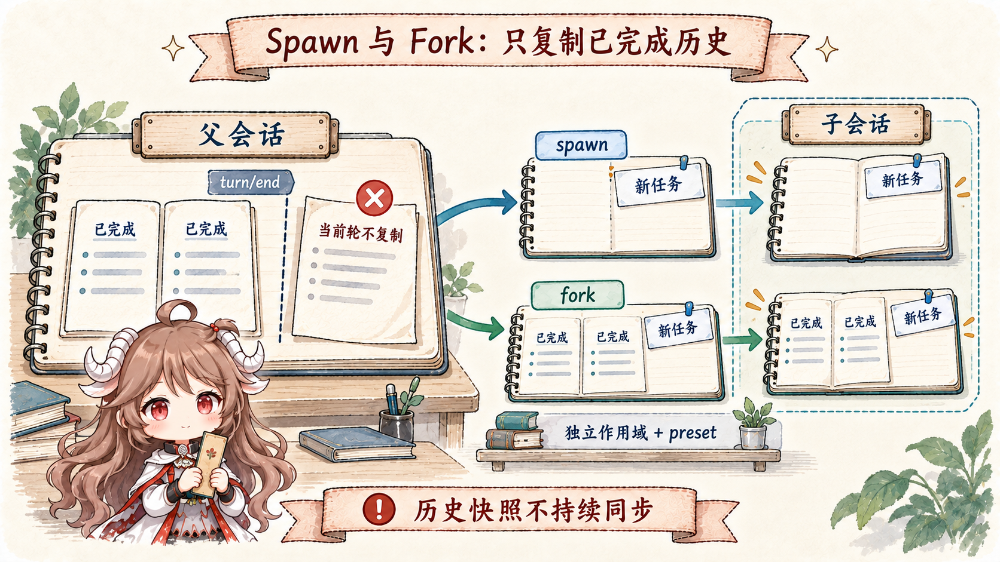
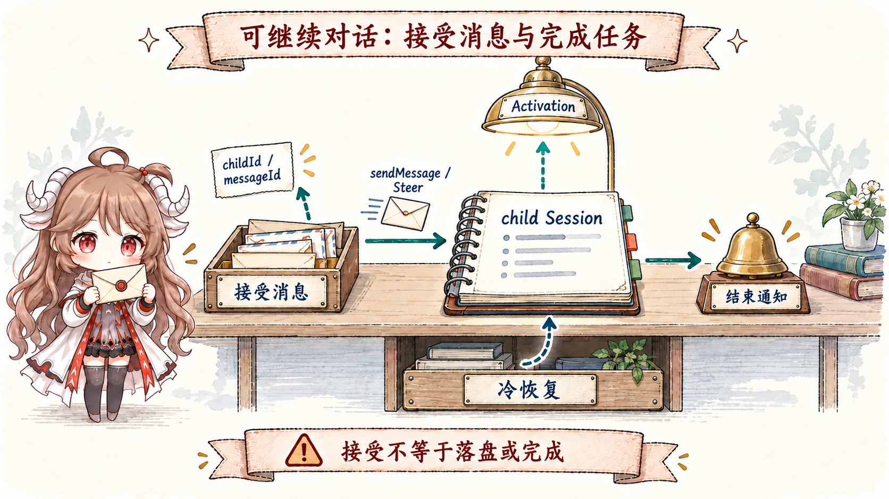
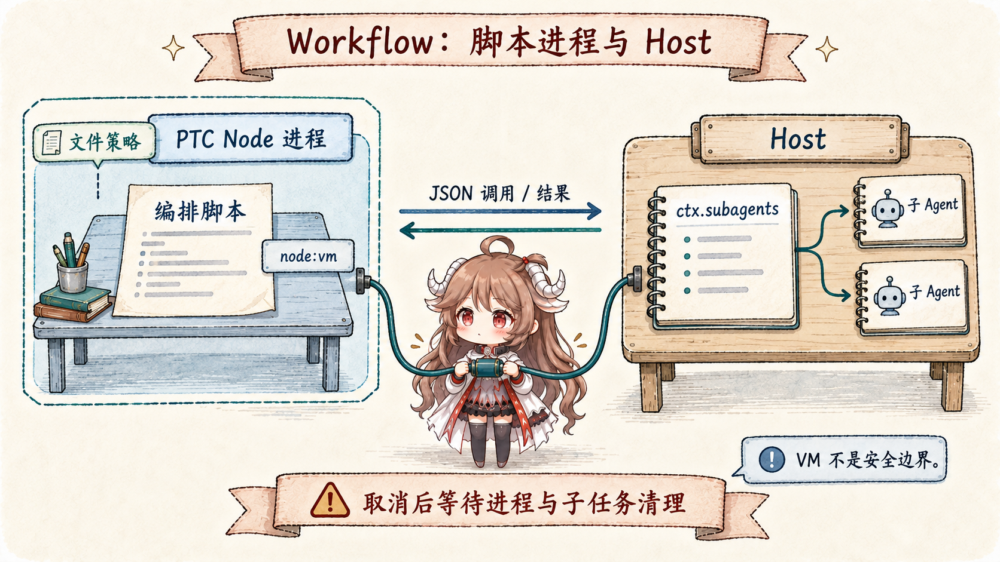
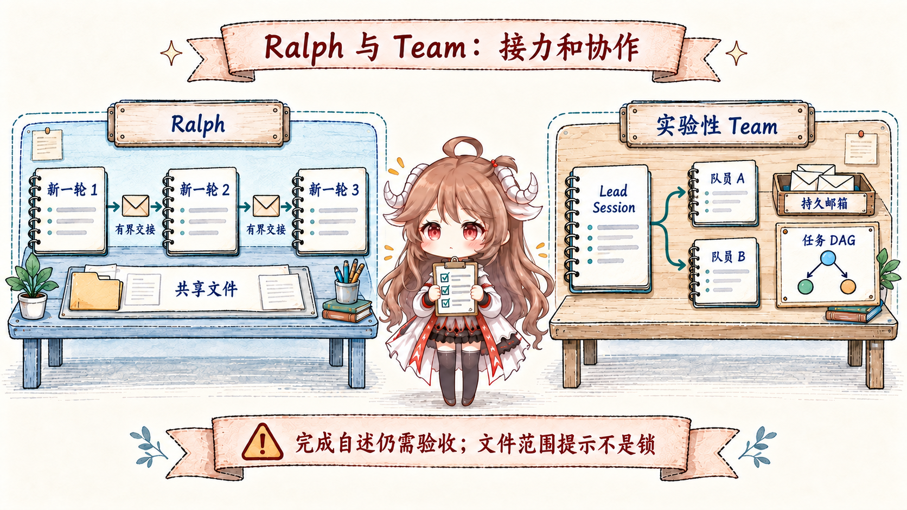

“开几个 Agent 并行做”听起来像一个调用选项，实际至少包含六个决定：child 看不看 parent history；谁拥有它的取消与 dispose；结果是同步返回、异步通知还是 durable mailbox；可以继续对话还是一次性结束；并发和深度在哪里封顶；多个 worker 改同一个 workspace 时谁负责冲突。
DSH 的答案不是一个巨大的 AgentManager，而是多个 seam。ctx.subagents 统一 child provider 和生命周期；ctx.workflowEngine 执行模型写的编排脚本；Ralph 把固定顺序策略装成普通工具；实验性 ctx.agentTeams 再在 continuable children 上叠 durable roster、mailbox 与 task DAG。
阅读契约。读完以后，你应该能说明：spawn 和 fork 唯一的历史差异；为什么 fork 必须切在最后一个 turn/end；one-shot run 与 continuable Activation 谁负责收尾；sendMessage() 和 settlement notice 为什么不能合并；PTC workflow 提供什么隔离、又绝不提供什么安全；以及 Ralph 与 Team 为什么不是“串行版和并行版的同一个功能”。
证据边界。本文固定在提交 ddefc45。实验性 Team 位于 packages/experimental，需要显式启用；它不是 base bundle 的稳定默认协作协议。toolFilter 和 shared-cwd policy 也不是安全边界，外部进程与 Bash 仍能绕过协调约定。
一、一个 provider seam，多个编排消费者
1.1 SubagentRuntime 只统一启动契约，不统一实现
SubagentRuntime 注册具名 provider。start(name, request) 返回一次性 child 的运行句柄；startContinuable(spec) 创建可继续对话的 child；sendMessage()、interrupt() 与查询操作围绕 Session 身份工作。消息权限要求准确的 live sender 和直接父子关系；中断则允许具备权限的祖先。外部 provider 可通过 ACP、SDK 等协议执行，不能据此推断每条路径都有本地 child Session。
subagent 与 subagent_fork 直接选择 provider。workflow 和 ralph 先启动 WorkflowRun，由 PTC 进程运行编排脚本，再通过 Host 调用同一个 subagent 服务。实验性 Team 使用 continuable provider，另行管理成员、持久邮箱和任务。
1.2 Depth、policy 与 capability 都在 child 创建前固定
Child header 保存 parentSession 与单调的 delegationDepth。Host 设置中的 maxDepth 默认是 1：只允许直接 children；工具显式配置可覆盖它，0 禁止继承该设置的工具委派，provider-managed 则把深度留给外部 provider。每次委派重新读取缺省上限，恢复旧会话也不能把已记录的 depth 调低来伪装 root。请求要求的 capability 必须由 provider 支持，否则在 child 创建前失败。
同进程 delegation 在 approval 服务存在时固定为 never，并在第一次异步操作前捕获父级权限状态：显式 sandbox override 以 source: delegation 记录，Auto / Full access 的 permission/preset 身份也一并继承，避免 fork 旧值覆盖当前选择。部署缺省 sandbox 不复制。这份权限快照与可选 toolFilter 分工不同：后者控制工具可见性，不能替代文件 sandbox 或权限审核。
二、spawn 与 fork 只在 seed 上不同
2.1 Spawn 空历史；fork 复制最后一个完整 turn 以前的前缀

spawn 不传 seed，child 只看 standalone task。fork 传 parent 已完成 turn 的连续前缀。调用 subagent 的那个 parent turn 仍开放，assistant tool call 还没有对应 result 和 turn/end；若复制 raw tail，child Session 一开始就不平衡。
所以 fork 只切到最近 turn/end。parent 尚无完整 turn 时，fork 退化成 fresh spawn。seed 是一次性 snapshot，parent 后续消息不会同步给 child。
2.2 历史继承不等于 scope 或权限继承
两条路径都走 shared in-process driver，创建独立 child scope，并通过 applyChildComposition()加入父级当前实际使用的 preset，再安装 child 自己的 persona 与 tool restriction。历史 seed 不等于父级临时注册或限制的复制；preset 组合和权限快照都有各自的显式继承过程。provider、model 与 reasoning effort 优先取父级最后一次已记录请求，尚无请求时回退到创建选项，maxTokens 保留配置值。切换模型路线而未指定 effort，会清除旧路线的 effort。
同 model/route 的 fork 有机会复用 inherited byte prefix。base composition仍把 spawn 配为 continuable background、fork 配为 one-shot，并关闭 fork 的模型路线选择。但 continuable 已不必在历史前添加 child 专属 report tool 和 system section：当前回传使用共用的 send_message，可选返回指引放在新任务内容中，preset 可以把 fork 改为 continuable。缓存是否复用仍取决于最终请求的字节前缀、工具定义与模型路线。
三、one-shot run 和 continuable child 的所有权不同
3.1 One-shot 以 SubagentRun 为唯一 holder-owned 边界
start() fulfill 前 provider 拥有所有 unpublished resource，失败必须 rollback 并 quiesce；fulfill 后 caller 拥有 SubagentRun，无论 result 成败都必须 dispose()。本地 run 的 id 就是 child Session id，结果只选 child 自己最后的非空 assistant output 或 structured value，不把 fork seed 和中间步骤塞回 parent。
Foreground tool 等待 result 并在 finally dispose；one-shot background 则交给 generic Task runtime，返回 job id。多个 sibling 可在 maxParallelToolCalls rolling pool 中重叠执行，但 result 仍按模型 call 顺序提交。它们对同一 workspace 的冲突由上层协调。
3.2 Continuable 以 durable Session 和最多一个 Activation 为核心

startContinuable() 在 initial prompt 被 inbox 接受时返回 { childId, messageId }，不等待 turn 开始，也不保证消息已经进入 Session log。之后 continuation manager 拥有最多一个 process-local Activation；running、waiting、settled 从 Agent quiescence 与 owned children 派生，inactive child 可从 persistence cold resume。
sendMessage()统一模型主动发送的父子消息：目标工作中时通过 Steer 在最近 step 接收，空闲时启动一轮；只有直接 child 可以冷恢复。浏览器的人类输入另有 Queue / Steer 选择，Queue 才保证进入后续轮次。interrupt() 取消目标当前 turn 并保留 inbox，已发布 descendants 不随之取消；中断后尚未唤醒的队列可能需要下一次 waking send。
模型主动消息与 Activation 结束通知仍是两种事实：前者保留发送者身份，后者由 runtime 报告完成、拒绝、取消或错误，只带最终 assistant 的非空文本，不把 reasoning 当作 user message 注入父级。父级不能将二者合并成 child 自述，也不能将 accepted 回执当成结果已落盘；普通 continuable 路径没有跨进程持久父级邮箱或 exactly-once 保证。
3.3 深度和驻留容量分别限制什么
maxActiveSubagents默认 8，限制沿连续 continuable 父子关系共享的进程内驻留池。创建和冷恢复先预约，再重建 Agent；等待 descendants 的父级、待处理 inbox 与正在清理的 Activation 仍占槽。满额直接报 ACTIVATION_LIMIT_REACHED，不会排队等待，避免父级占着槽又等待孩子造成死锁。one-shot 和外部 provider 不计入这个池；one-shot 父级下的 continuable children 使用新池。
startContinuable → { childId, messageId } // inbox 接受回执
sendMessage(child) → 工作中：Steer；空闲：启动 turn
满额的冷恢复 → 拒绝；不会默默排队
结束通知 → outcome + closing text；仍需父级验收四、Workflow 把脚本放进 PTC 进程，由 Host 管理 children
4.1 Script 是 control plane，Agent 仍在 Host

PTC workflow engine每次运行使用一个新的 Node 进程，复用 PTC 的启动、传输与文件 sandbox provider。脚本仍使用 args 和 agent()、parallel()、pipeline()、phase()、log()；Host binding 把请求交给 ctx.subagents，Host 保有本地 child 的运行句柄，脚本只收发 JSON，不把 Agent 对象搬进 guest。当前 engine 要求 TypeScript PTC provider；Python composition 必须关闭这组 workflow 消费者。
跨进程值必须是无损 JSON；function、cycle、稀疏数组、exotic prototype、non-finite number 和嵌套 undefined 都会被拒绝。默认 maxConcurrentAgents: 0 按 CPU 解析，maxTotalAgents: 1000，单次 parallel/pipeline 最多 4096 items；请求只能降低 total cap。它们是正常 helper 调用的协作限额，不是 Host 强制安全配额；PTC 的 maxPendingCalls 还要为 child start、result、dispose 与 progress 留出余量。
4.2 文件策略、取消和清理各自保证什么
调用者 Session 的 standing file policy 与 cwd 决定脚本进程的文件访问范围；环境为空，node:vm 仍只约束常规 API，真正的文件限制取决于所选 OS sandbox provider，且不限制网络。engine 请求 timeoutMs: null，没有整体时长上限；初始同步片段默认有 syncTimeoutMs: 5000，调用方 deadline 与 abort signal 仍生效。
取消会立即 abort PTC 进程以及待启动和已启动的 children。晚于取消才返回的 child 也要 dispose；调用者的 dispose()必须等待进程结束与 child 清理，没有独立的放弃清理计时器。运行错误收敛为 stopReason: error，取消为 cancelled；普通 child failure 在脚本侧返回 null，由脚本决定后续动作。这仍不是持久 workflow：重启不会恢复脚本中间进度。
五、Ralph 与实验性 Team 是两种不同的长期协作
5.1 Ralph 用 fresh child 序列淘汰对话惯性

ralph 是固定 foreground workflow，不是 agent-loop 的特殊模式；发布默认组合中关闭，需显式启用。每一轮启动一个 fresh、无 parent seed 的 structured-output child；immutable objective、轮次、shared-workspace instruction 和上一份 bounded handoff 构成新 prompt。默认最多 256 轮，handoff 最多 16384 字符。
Round report 的 status 是 continue、complete 或 blocked；最终 tool result 收敛成 complete、blocked 或 budget-limited。完成与 blocker 都是 worker self-report，没有独立 verifier。每轮 failure 终止 run，不自动重试；workspace 是唯一长期共享事实，未写入的 reasoning 随 child 消失。
5.2 Team 用 Lead log 协调具名、可继续、并发成员
实验性 Agent Team 让 root Session id 成为隐式 TeamId。具名 teammate 是 continuable direct child；Lead log 保存 team/member、team/message/queued/delivered 和 revisioned team/task snapshots。mailbox 在尝试投递前先 append+flush，task dependencies 必须形成 DAG。
消息先写 Lead log 并 flush，再用 Steer 尝试投递。mailbox只有确认目标 Session 的持久 pending inbox 或 history 含相同消息身份后，才写 delivered；恢复时按 queued-minus-delivered 重试，并结合目标状态去重。queued 表示已持久排队，accepted 表示 inbox 接受，都不表示任务完成。这仍是进程内重试加目标 Session 去重，不是跨进程 exactly-once。所有成员共享 checkout；writeScopes 只提示重叠，不锁文件、不授权写入，Bash、formatter 和外部写入者仍需协调。
六、这组多 Agent 机制带来的工程判断
- 先选生命周期，再选 provider。要一次答案就 one-shot；要持续对话才 continuable；不要用 background 当作含糊的第三种状态。
- 没有独立上下文需求，就不要 delegation。一两个有依赖的动作直接做，large fan-out 才进入 workflow。
- Fork 只继承完成事实。复制开放 turn 会制造不平衡工具历史；后续 parent 变化也不会自动同步。
- Visibility 不是 authority。toolFilter、prompt policy 和 writeScopes 都不能替代 sandbox、approval 与文件冲突控制。
- 每个 holder 都必须负责 quiescence。SubagentRun、WorkflowRun、Activation 与 Team forest 各有自己的 dispose/drain 边界。
- 不要把 self-report 当验收。Ralph complete、child report 与 settlement notice 都需要 parent 或外部证据判断质量。
最后一篇会回到 Cordis：模型如何通过两个只读 Inspect 工具了解运行时，再借 plugin_manager 安装持久 profile bundle；并区分安装被接受、profile 写入和各运行端实际应用。
参考源码
- subagent seam README 与 tool-subagent README：provider registry、one-shot/continuable、depth、policy 和模型工具生命周期。
- spawn README、fork README 与 shared driver：seed boundary、child scope、result 与 dispose。
- workflow seam、PTC engine 与 workflow tool：script hook、caps、JSON boundary、取消与前台收集。
- Ralph README：fresh round、structured handoff、budget 与限制。
- experimental Agent Team README 与 tool adapter：durable roster、mailbox、task DAG 与模型权限。